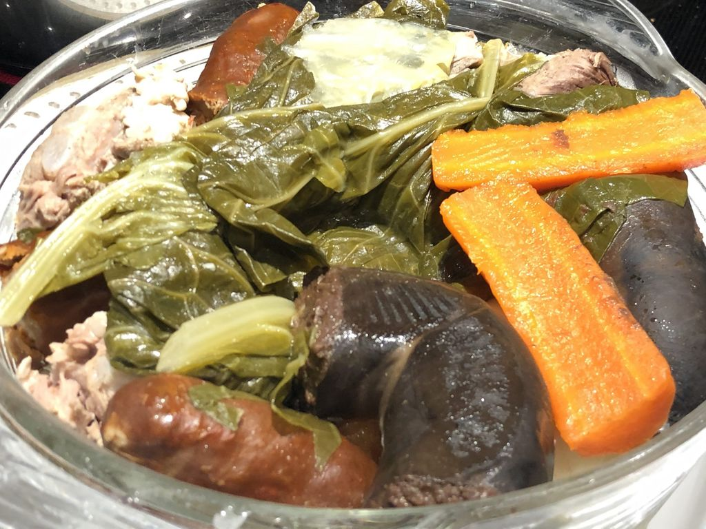

Portuguese Boiled Meat and Vegetables

Best Portuguese Boiled
Ingredients
- 900 grams beef (2 lbs)
- 450 grams beef ribs (1 lb)
- 225 pork belly (toucinho 1/2 lb) cut in squares
- You can check more here
- In a large deep pot add the beef, beef ribs, salt to taste, onion, garlic buds, and fill with water just over the meat. Cook on medium-high heat for about 30 minutes. Make sure water is always covering the meat, add as needed.
- In the meantime prepare the rice, In a medium-size pot, add 2 cups of rice and 4 cups of water and cook for 25-30 minutes. You can also use a rice cooker. Once cooked set aside.
- Add in the pork spare ribs, pork belly, and chorizo into the beef pot and cook on medium heat for 25 minutes. Add water if needed to cover.